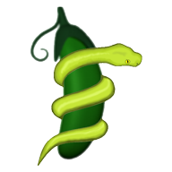

SnapPy¶
What is SnapPy?¶
SnapPy is a program for studying the topology and geometry of 3-manifolds, with a focus on hyperbolic structures. It runs on Mac OS X, Linux, and Windows, and combines a link editor and 3D-graphics for Dirichlet domains and cusp neighborhoods with a powerful command-line interface based on the Python programming language. You can see it in action, learn how to install it, and watch the tutorial.
News¶
Version 3.0.3 (December 2021):
Runs natively on Macs with Apple Silicon processors (M1, M1 Pro, M1 Max).
Version 3.0.2 (November 2021):
Support for SageMath 9.4 and 9.5, Python 3.10, and macOS Monterey.
Version 3.0 (April 2021): New features include:
Incorporates Zoltán Szabó’s program for computing Knot Floer homology, see
knot_floer_homology. This can compute the Seifert genus of a 25 crossing knot in mere seconds!Topological slice obstructions of Herald-Kirk-Livingston, see
slice_obstruction_HKL.Faster “local” algorithm for
jones_polynomial.Cohomology fractals added to
inside_view.Convention changes: Sign of knot signature (now positive knots have negative signatures), choice of braid generators (now positive generators give positive crossings).
Updates to methods
cusp_translations,cusp_areas,short_slopes. AlsoLinknow accepts DT codes.Support for SageMath 9.3, Python 3.9, and macOS Big Sur.
macOS app now code-signed and notarized.
SnapPy now requires Python 3.6 or newer.
Version 2.8 (June 2020): New features include:
Raytraced interior views of a hyperbolic 3-manifold via the
inside_viewmethod, see also images and demo video.Verified computations: Several new features:
Complex volume (and thus the Chern-Simons invariant) for both cusped and closed manifolds, see
complex_volume.Disjoint cusp neighborhoods by the method
cusp_areaswhich usescusp_area_matrix.Cusp shapes (see
cusp_info).Finding all
short_slopesin disjoint embedded cusp neighborhoods.
The census
HTLinkExteriorshas been extended to 15 crossing knots (contributed by Malik Obeidin).The census
CensusKnotshas been extended to triangulations with 9 ideal tetrahedra.Support for SageMath 9.0 and macOS Catalina.
Development moved to GitHub.
Documentation¶
- Installing SnapPy
- Screenshots: SnapPy in action
- Tutorial
- The snappy module and its classes
- Using SnapPy’s link editor
- Links: planar diagrams and invariants
- Number theory of hyperbolic 3-manifolds
- Verified computations
- Other components
- News
- Credits
- Reporting bugs and other problems
- To Do List
- Development Basics
Credits¶
Written by Marc Culler, Nathan Dunfield, and Matthias Goerner using the SnapPea kernel written by Jeff Weeks, with contributions from many others. If you use SnapPy in your work, please cite it as described here. If you encounter problems with SnapPy, please report them.
Released under the terms of the GNU General Public License, version 2 or later.
The development of SnapPy was partially supported by grants from the National Science Foundation, including DMS-0707136, DMS-0906155, DMS-1105476, DMS-1510204, DMS-1811156, and the Institute for Computational and Experimental Research in Mathematics. Any opinions, findings, and conclusions or recommendations expressed on this site are those of the authors and do not necessarily reflect the views of the National Science Foundation.